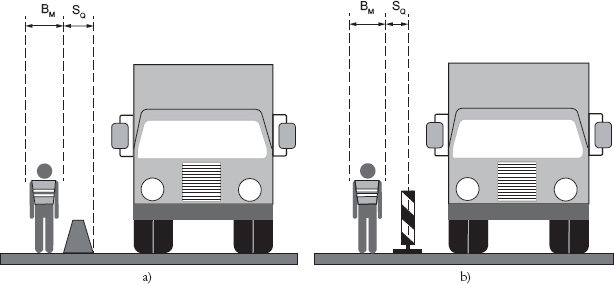
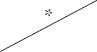
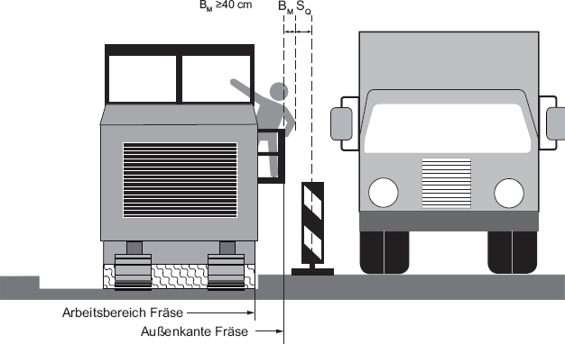
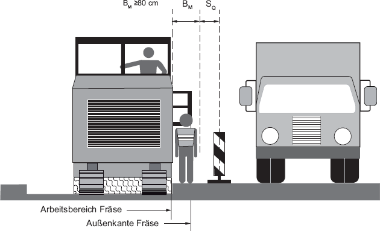
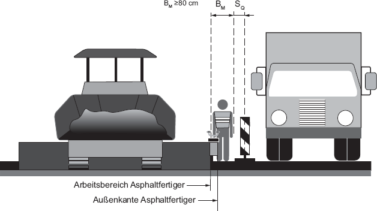
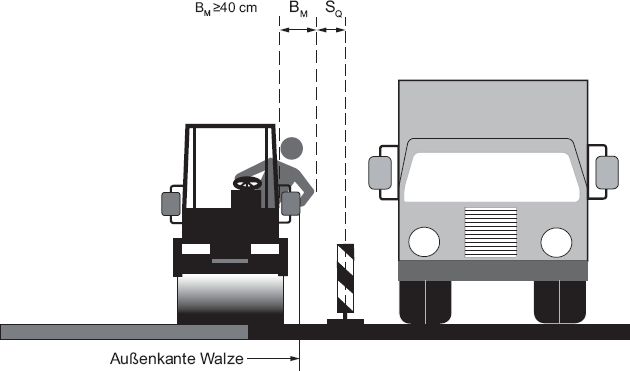
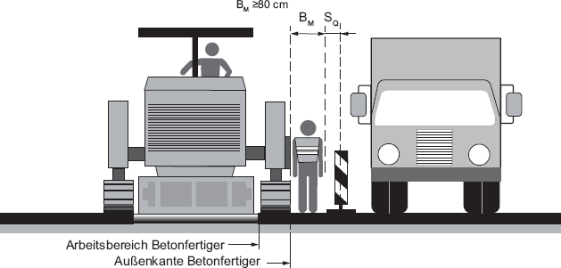
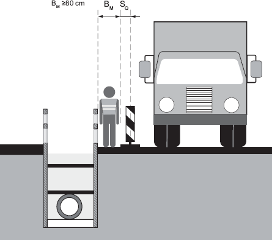
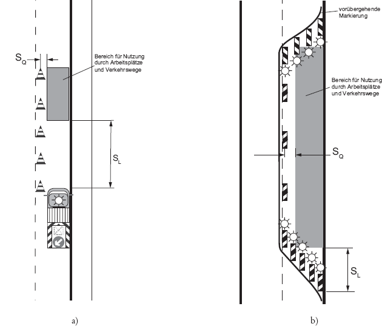

(1) Straßenbaustellen sind so zu planen und einzurichten, dass Gefährdungen durch den fließenden Verkehr für Beschäftigte möglichst vermieden und verbleibende Gefährdungen möglichst gering gehalten werden.
Gefährdungen durch den fließenden Verkehr können z. B. durch eine vollständige Umleitung des Verkehrs bei einbahnigen Straßen oder eine Überleitung des Verkehrs auf die Gegenfahrbahn bei zweibahnigen Straßen vermieden werden.
(2) Sofern Gefährdungen für Beschäftigte durch den fließenden Verkehr nicht vermieden werden können, sind diese so weit wie möglich zu minimieren. Zur Minimierung dieser Gefährdungen sind für Arbeitsplätze und Verkehrswege auf Straßenbaustellen bereits in der Planung der Ausführung der Arbeiten unter Berücksichtigung der zum Einsatz kommenden Arbeitsverfahren und Arbeitsmittel geeignete Schutzmaßnahmen (siehe Punkte 4.2 bis 4.6) vorzusehen.
Hinweis:
Bei der Auswahl der Schutzmaßnahmen sind auch die Hinweise des Koordinators sowie des Sicherheits- und Gesundheitsschutzplans (SiGePlan) nach Baustellenverordnung (BaustellV) zu berücksichtigen.
(3) Bei Straßenbaustellen sind die erforderlichen Platzbedarfe für Arbeitsplätze, Verkehrswege, Sicherheitsabstände und technische Schutzmaßnahmen zu ermitteln und bereitzustellen. Diese Platzbedarfe sind abhängig von den auszuführenden Tätigkeiten und von den eingesetzten Arbeitsmitteln.
Dabei sind Platzbedarfe z. B. für
zu berücksichtigen.
(4) Für Verkehrssicherungsarbeiten, z. B. das Aufstellen und Abbauen von Verkehrseinrichtungen, das Aufstellen und Abbauen von Fahrzeug-Rückhaltesystemen oder die Durchführung von Markierungsarbeiten, sind die Absätze 1 bis 3 anzuwenden.
(5) Arbeitsplätze und Verkehrswege auf Straßenbaustellen dürfen nur eingerichtet und betrieben werden, wenn eine sichere Führung des fließenden Verkehrs gewährleistet ist.
Hinweis:
Vor dem Beginn von Arbeiten, die sich auf den öffentlichen Straßenverkehr auswirken, ist eine verkehrsrechtliche Anordnung gemäß StVO einzuholen.
(1) Sind Arbeitsplätze einschließlich Verkehrswege nicht bereits durch baulich vorhandene Fahrzeug-Rückhaltesysteme (z. B. im Mittelstreifen) vom fließenden Verkehr getrennt, sind zur Minimierung der Gefährdungen durch ein Abkommen von Fahrzeugen bei einer zulässigen Höchstgeschwindigkeit größer 50 km/h zur räumlichen Trennung von Arbeitsplätzen und Verkehrswegen auf Straßenbaustellen vom vorbeifließenden Verkehr grundsätzlich transportable Schutzeinrichtungen einzusetzen.
Bei zulässigen Höchstgeschwindigkeiten von 50 km/h und weniger sollen transportable Schutzeinrichtungen eingesetzt werden:
Andere Maßnahmen, z. B. ein Baugrubenverbau, können angewendet werden, wenn sie für das beabsichtigte Aufhalten oder Umlenken von Fahrzeugen dimensioniert und ausgebildet sind.
(2) Bei der Auswahl der transportablen Schutzeinrichtungen nach Absatz 1 sind Geschwindigkeit, Gewicht sowie Anfahrwinkel der Fahrzeuge zu berücksichtigen (siehe dazu: Aufhaltestufen entsprechend Liste nach TL-Transportable Schutzeinrichtungen (TSE) der Bundesanstalt für Straßenwesen (BASt)) und die in den Tabellen 1 und 3 genannten Sicherheitsabstände anzuwenden.
(3) Können transportable Schutzeinrichtungen nicht eingesetzt werden, z. B.
oder ist der Einsatz transportabler Schutzeinrichtungen nicht verhältnismäßig, z. B.
sind Verkehrseinrichtungen (z. B. Leitbaken, Leitkegel), Leitschwellen, Leitborde oder Leitwände zur Führung des Straßenverkehrs zu verwenden. Dabei sind die in den Tabellen 1 und 3 genannten Sicherheitsabstände anzuwenden.
(1) Bei Straßenbaustellen kürzerer Dauer müssen zur Abgrenzung von Arbeitsplätzen und Verkehrswegen zum fließenden Verkehr geeignete Verkehrseinrichtungen eingesetzt werden. Dies können z. B. Leitbaken, Leitkegel, fahrbare Absperrtafeln, Warneinrichtungen und Lichtzeichenanlagen sein. Dabei sind die in den Tabellen 2 und 3 genannten Sicherheitsabstände anzuwenden.
(2) Werden Fahrzeuge und Maschinen als Sicherungsfahrzeuge eingesetzt, müssen diese die verkehrsrechtlichen Anforderungen erfüllen (siehe § 35 Absatz 6 StVO und Richtlinien für die Sicherung von Arbeitsstellen an Straßen (RSA)).
(1) Zum Schutz der Beschäftigten ist für Arbeitsplätze und Verkehrswege auf Straßenbaustellen ein seitlicher Sicherheitsabstand (SQ) zum fließenden Verkehr vorzusehen. Damit werden z. B. unbeabsichtigte Bewegungen von Beschäftigten aus dem Bereich von diesen Arbeitsplätzen und Verkehrswegen heraus oder unbeabsichtigte Fahrbewegungen des fließenden Verkehrs berücksichtigt. Im seitlichen Sicherheitsabstand (SQ) dürfen sich außer zum Auf- und Abbau der Verkehrseinrichtungen keine Arbeitsplätze oder Verkehrswege befinden.
(2) Seitliche Sicherheitsabstände (SQ) werden bei Fahrzeug-Rückhaltesystemen auf die dem Verkehr zugewandte äußere Begrenzung des Fahrzeug-Rückhaltesystems bezogen (siehe Abbildung 1a)). Seitliche Sicherheitsabstände (SQ) werden bei Leitbaken, Leitkegeln, Leitwänden, Leitschwellen und Leitborden jeweils auf deren Mittelachse bezogen (siehe Abbildung 1b)). Aufgrund ihrer unterschiedlichen Abmessungen werden diesen Elementen spezifische Sicherheitsabstände zugeordnet.

| Abb. 1: | Bezugslinie für seitliche Sicherheitsabstände (SQ) zum fließenden Verkehr: | |
| a) | dem Verkehr zugewandte äußere Begrenzung bei Fahrzeug-Rückhaltesystemen | |
| b) | Mittelachse bei Leitbaken, Leitkegeln, Leitwänden, Leitschwellen, Leitborden | |
Tabelle 1: Mindestmaße für seitliche Sicherheitsabstände (SQ) zum fließenden Verkehr bei Straßenbaustellen längerer Dauer
| Element | Zulässige Höchstgeschwindigkeit | |||||
| 30 km/h | 40 km/h | 50 km/h | 60 km/h | 80 km/h | 100 km/h | |
| Fahrzeug-Rückhaltesysteme | 30 cm | 40 cm | 50 cm | 60 cm | 80 cm | 100 cm |
| Leitbake (1000 mm x 250 mm, 750 mm x 187,5 mm), Leitkegel, Leitwand | 30 cm | 40 cm | 50 cm | 70 cm | 90 cm |  |
| Leitbake (500 mm x 125 mm), Leitschwelle, Leitbord | 50 cm | 60 cm | 70 cm | 90 cm | 110 cm | |
*Hinweise zu Tabelle 1:
Tabelle 2: Mindestmaße für seitliche Sicherheitsabstände (SQ) zum fließenden Verkehr bei Straßenbaustellen kürzerer Dauer
| Element | Zulässige Höchstgeschwindigkeit | ||||||
| 30 km/h | 40 km/h | 50 km/h | 60 km/h | 80 km/h | 100 km/h | 120 km/h | |
| Leitbake (1000 mm x 250 mm, 750 mm x 187,5 mm), Leitkegel, Leitwand | 30 cm | 40 cm | 50 cm | 70 cm | 90 cm | 110 cm | 130 cm |
| Leitbake (500 mm x 125 mm), Leitschwelle, Leitbord | 50 cm | 60 cm | 70 cm | 90 cm | 110 cm | 130 cm | 150 cm |
(3) Können die Mindestmaße aus den Tabellen 1 und 2 nicht eingehalten werden, sind als Ergebnis einer Gefährdungsbeurteilung Schutzmaßnahmen festzulegen, die mindestens die gleiche Sicherheit und den gleichen Gesundheitsschutz für die Beschäftigten erreichen. Dabei sind z. B. folgende Kriterien zu berücksichtigen:
Geeignete Schutzmaßnahmen sind z. B.
(4) Wären bei Festlegung von Schutzmaßnahmen nach Absatz 3 besondere Gefährdungen für die Verkehrsteilnehmer infolge erheblicher Behinderungen bzw. erheblicher Verkehrsbelastungen zu erwarten, sind in Abstimmung mit den für den Arbeitsschutz und den für den Straßenverkehr zuständigen Behörden stattdessen die Schutzmaßnahmen festzulegen, die für Beschäftigte auf Straßenbaustellen und für Verkehrsteilnehmer gleichermaßen die größtmögliche Sicherheit gewährleisten.
Hinweis:
Vor dem Beginn von Arbeiten, die sich auf den öffentlichen Straßenverkehr auswirken, ist eine verkehrsrechtliche Anordnung gemäß StVO einzuholen.
Als Mindestbreiten (BM) für Arbeitsplätze und Verkehrswege auf Straßenbaustellen sind erforderlich:
Für manuelle Tätigkeiten sind die erforderlichen Mindestbreiten (BM) zu ermitteln. Dabei darf die Mindestbreite BM 80 cm nicht unterschritten werden.

Abb. 2a: Seitlicher Sicherheitsabstand (SQ) und Mindestbreite (BM) für Arbeitsplätze und Verkehrswege auf Straßenbaustellen, Beispiel Fräse mit herauslehnendem Fahrer

Abb. 2b: Seitlicher Sicherheitsabstand (SQ) und Mindestbreite (BM) für Arbeitsplätze und Verkehrswege auf Straßenbaustellen, Beispiel Fräse mit Mitgängerbetrieb

Abb. 3: Seitlicher Sicherheitsabstand (SQ) und Mindestbreite (BM) für Arbeitsplätze und Verkehrswege auf Straßenbaustellen, Beispiel Asphaltfertiger

Abb. 4: Seitlicher Sicherheitsabstand (SQ) und Mindestbreite (BM) für Arbeitsplätze und Verkehrswege auf Straßenbaustellen, Beispiel Walze mit Überlappung im Bereich der Naht

Abb. 5: Seitlicher Sicherheitsabstand (SQ) und Mindestbreite (BM) für Arbeitsplätze und Verkehrswege auf Straßenbaustellen, Beispiel Beton-/Gussasphaltfertiger mit überkragendem Kettenlaufwerk

Abb. 6: Seitlicher Sicherheitsabstand (SQ) und Mindestbreite (BM) für Arbeitsplätze und Verkehrswege auf Straßenbaustellen, Beispiel Kanalgrabenherstellung
(1) Für Arbeitsplätze und Verkehrswege auf Straßenbaustellen ist ein Sicherheitsabstand in Längsrichtung (SL) zum ankommenden Verkehr vorzusehen. Damit wird z. B. die Gefährdung durch unbeabsichtigtes Hineinfahren in den abgesperrten Bereich der Baustelle berücksichtigt. In diesem Sicherheitsabstand (SL) dürfen sich außer zum Auf- und Abbau der Verkehrseinrichtungen keine Arbeitsplätze oder Verkehrswege befinden.
(2) Beim Einsatz von Verkehrseinrichtungen, fahrbaren Absperrtafeln mit und ohne Zugfahrzeug, Leitschwellen, -borden oder -wänden sind Sicherheitsabstände (SL) nach Tabelle 3 anzuwenden.
Tabelle 3: Mindestmaße für Sicherheitsabstände in Längsrichtung (SL)a zum ankommenden Verkehr
| Lage der Straßenbaustelle (Arbeitsstelle) bzw. zulässige Höchstgeschwindigkeit außerhalb des Straßenbaustellenbereichs (Arbeitsstellenbereichs) | |||
| Element | innerörtliche Straßen | Einbahnige Landstraßen und innerörtliche Straßen mit Vzul > 50 km/h | Autobahnen, autobahnähnliche Straßen und zweibahnige Landstraßenb |
| Fahrbare Absperrtafel mit Zugfahrzeug oder Sicherungsfahrzeug ≥ 10 t zulässige Gesamtmasse | 3 m | 10 m | 75 mc |
| Fahrbare Absperrtafel mit Zugfahrzeug oder Sicherungsfahrzeug < 10 t bis ≥ 7,49 t zulässige Gesamtmasse | 5 m | 15 m | 100 mc |
| Fahrbare Absperrtafel mit Zugfahrzeug oder Sicherungsfahrzeug < 7,49 t zulässige Gesamtmasse | 7,5 m | 20 m | nicht zulässig |
| Fahrbare Absperrtafel ohne Zugfahrzeug | 15 m | 40 m | |
Hinweis:
Werden auf innerörtlichen Straßen bzw. auf Landstraßen andere Verkehrseinrichtungen (§ 43 StVO) oder bauliche Leitelemente zur Querabsperrung von Teilen der Fahrbahn eingesetzt, so beträgt SL gegenüber dem ankommenden Verkehr innerorts 10 m, außerorts entspricht SL der Länge des Verschwenkungsbereichs gemäß RSA, siehe Abbildung 7b.

| Abb. 7: | Sicherheitsabstand (SL) zum ankommenden Verkehr am Beispiel | |
| a) | fahrbare Absperrtafel mit Zugfahrzeug | |
| b) | mit Verschwenkungsbereich | |
(3) Bei Fahrzeug-Rückhaltesystemen entspricht das Maß des Sicherheitsabstandes (SL) zum ankommenden Verkehr der Länge des Verschwenkungsbereiches (Verschwenkungsbereich entsprechend Verkehrszeichenplan der verkehrsrechtlichen Anordnung).
(4) Können die Mindestmaße aus Tabelle 3 nicht eingehalten werden, sind als Ergebnis einer Gefährdungsbeurteilung Maßnahmen festzulegen, die mindestens die gleiche Sicherheit und den gleichen Gesundheitsschutz für die Beschäftigten erreichen. Dabei sind die Kriterien aus Punkt 4.3 Absatz 3 zu berücksichtigen.
Geeignete Maßnahmen sind z. B.:
Hinweis:
Vor dem Beginn von Arbeiten, die sich auf den öffentlichen Straßenverkehr auswirken, ist eine verkehrsrechtliche Anordnung gemäß StVO einzuholen.
An Stellen, an denen Beschäftigte nicht ausreichend nach den Punkten 4.2 bis 4.5 vor den Gefährdungen des fließenden Verkehrs geschützt werden, z. B. im Bereich von Straßenkreuzungen oder für einzelne Tätigkeiten mit besonderem Platzbedarf, sind ergänzende Maßnahmen zur Minimierung der Gefährdung erforderlich, z. B. eine kurzzeitige Sperrung, Verkehrsbeschränkungen für Lkw. Auch der Einsatz von Polizei an diesen Stellen zur Lenkung und Leitung des öffentlichen Straßenverkehrs kann eine geeignete Maßnahme sein.
| a | Die genannten Sicherheitsabstände (SL) sind im Sinne eines durch einen Anprall aufzehrbaren Bereiches als lichtes Maß zwischen Vorderkante der Absperrung (Sicherungs- bzw. Zugfahrzeug) und Arbeitsbereich zu verstehen, d. h. als Nettomaß, siehe Abbildung 7a. |
| b | Auf Rampen (Verbindungsfahrbahnen in Knotenpunkten) können in Abhängigkeit von der Lage der Baustelle in der Rampe, der Rampenlänge und den tatsächlich gefahrenen Geschwindigkeiten kleinere Abstände in Betracht kommen, jedoch nicht unter 20 m. |
| c | Bei beweglichen Straßenbaustellen (Arbeitsstellen) kann der Abstand auf 50 m reduziert werden. |